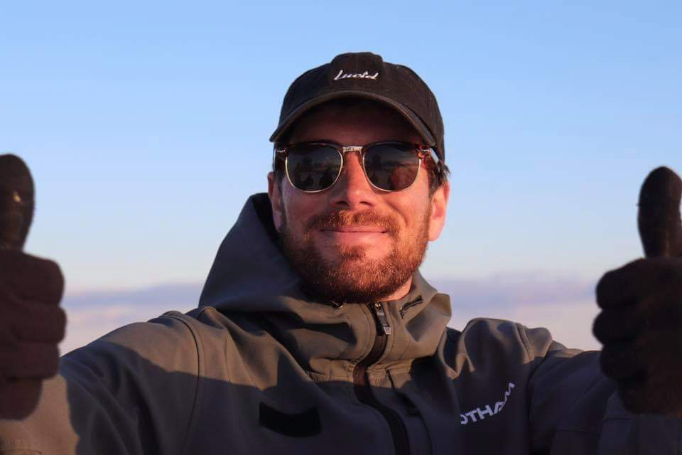

Hi, I'm Gareth Beer 👋🏻
I am an aspiring software developer and my first project is to create a website, so here it is! Keep on scrolling if you would like to know more about me!
I have a passion for IT and have from an early age but have never done anything with it, I have always been fairly technically minded and enjoyed tinkering on computers as well as taking them apart just for the sake of it. Having spent evenings completing challenges on codeacademy and freecodecamp I thought it was time to put my money where my mouth is and prove to myself and others that I can do this for real. That is why I decided to take the plunge and book on the MCR codes software engineering fastrack course because it would give me the push to turn a geniune interest and passion into a career.
My dream would be to work within the snow sports or the adventure tourism industry as a developer so that I could combine my two passions into a career. Wish me luck! 🤞🏻
I gained a 2:1 Bsc Honours degree in Biomedical Science Degree at the University Of Salford. I have always been very interested in the human body and science as a wider topic which stemmed from my love of sports and exercising.
After University I got offered a contracting role working for Bank of America within their complaints department, what initially should have been a short term 6 month contract turned into an 18month contract! It was a good experience of a target driven, highly regulated work environmnet and gave me a lot of transferable skills. I really got to grips with Microsoft Office software such as Excel, Word and PowerPoint.

I then decided to pursue a dream of mine before I settled down into a career so I moved out to Canada and became a ski Instructor ⛷. I spent two seasons as a full time instructor at Mount Norquay ski resort in Banff, Alberta. In the summers I found my passion for the great outdoors by hiking, learning to rock climb, mountain biking and wild camping. I then spent a winter season in Australia as a ski instructor as well as a few months travelling WA and Victoria